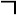
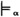
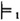
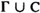
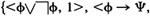
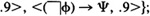
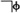

by Abraham Kandel
CRC Press, CRC Press LLC
ISBN: 084934297x Pub Date: 11/01/91
|
|
Fuzzy Expert Systems
by Abraham Kandel CRC Press, CRC Press LLC ISBN: 084934297x Pub Date: 11/01/91 |
| Previous | Table of Contents | Next |
For a second motivation for adopting the first definition of consistency, consider the following case: Γ has probability 1 and there are no constraints, and we may derive from Γ both a formula and its negation (this is possible in PL since implications are assigned probability by the model). In this case, all formulas derived from Γ will have probability 1. The first definition will assign in this case a consistency 0 while, according to the second definition, the consistency is 1. Therefore, in the following, “consistency” will be used in the meaning assigned by the first definition.
It is easy to see that consistency of Γ to degree 1 implies that pΓ = 1 (and the same goes for the constraints). The converse is not true, as the formulas φ, φ → Ψ, and φ →  Ψ may all have probability 1, but the consistency of the set is 0.
Consistency check may be used to assess the quality of the probability estimates of the experts (probability assignments of the model) to rules (implication formulas). Note that an expert system may be inconsistent in the everyday usage of the word by assigning different probability values to the same formula when different derivations are used. This is typical of expert systems execution, where many outputs may correspond to a single input, since the choice of rules to be fired is not completely deterministic.
The notion of extended consistency is also relevant to expert systems. This is the consistency of a set of implication formulas (rules). If Γ is a set of implication formulas, then only few conclusions can be drawn: the original formulas and their conjunctions, transitive closure, and substitution of constant symbols. Let Σ1 be a set of formulas consisting of all the left-hand-side parts of implications in Γ, and let Σ2 be a set of formulas consisting of all the negated right-hand-side parts of implications in Γ. When Σ1 or Σ2 is joined with Γ, additional conclusions may be drawn. It is the minimal consistency of Σ1 U Γ, Σ2 U Γ which corresponds to our notion of the extended consistency of the rules. Obviously, extended consistency to degree α implies consistency to degree at least α, but not vice versa.
We are only interested in derivation from sets of formulas which are consistent to some positive degree. Given such a set of formulas Γ, define:
It is easy to see that only consistency to degree 1 ensures both relative and uniform soundness. For a counter example consider the following Γ: {<φ, p>, <φ → (φ → θ), 1>}, and let p < 1; pΓ = p but pθ = p2 < p, so we do not have relative soundness. This example can be modified (by substituting for the second formula φ → . . . φ → (φ → θ) to show that absolute soundness is not ensured (for any positive value of k). Consistency to degree k implies uniform soundness to degree k. Derivations from sets of formulas consistent to some positive degree less than one (the common case for expert systems) may be sound, but each one must be carefully checked.
Completeness: PL is complete if for each Γ and formula φ, if Γ φ then Γ  φ. In the case of consistency to degree 1 and all constraints probability 1, corresponding to FOPC consistency, one can show that PL is complete for α = 1, i.e., if Γ φ then Γ  φ. The proof idea is to use FOPC completeness, and we outline the technical retails. Let Σ denote the union of the constraints C, Γ, and φ. Given a PL model S satisfying Σ with probability 1, construct a first order structure S′ satisfying Σ in the following way: each atomic formula in S′ will be true provided it has a positive probability in S. By structural induction on formulas in Σ it can be shown that S′ satisfies them (use that every formula in Σ is satisfied to degree 1; the interesting part is implications, and the consistency condition on implications is the required key). This mapping from PL models to FOPC structures is onto. By completeness of FOPC, there exists a derivation in FOPC of φ from , which can be easily translated into a proof of φ from Γ in PL (since the axioms of FOPC were made the axioms of PL). Therefore we have outlined the following:
Theorem — For PL theories where all probabilities are 1, derivation is sound and complete. In other words, PL is a generalization of FOPC. When the degree of consistency is less than 1, PL is not complete. For a proof consider Γ =  ; Γ F.9 Ψ (since either φ or  has probability 1, and by modus ponens Γ’s probability is .9). Yet, there is no derivation of Ψ from Γ.
| Previous | Table of Contents | Next |